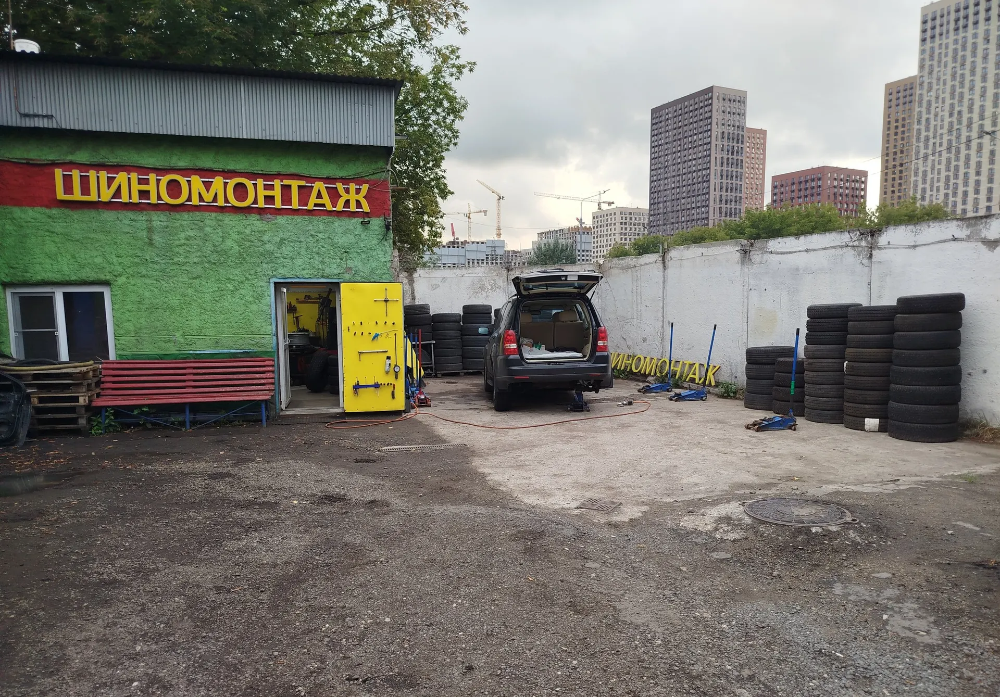
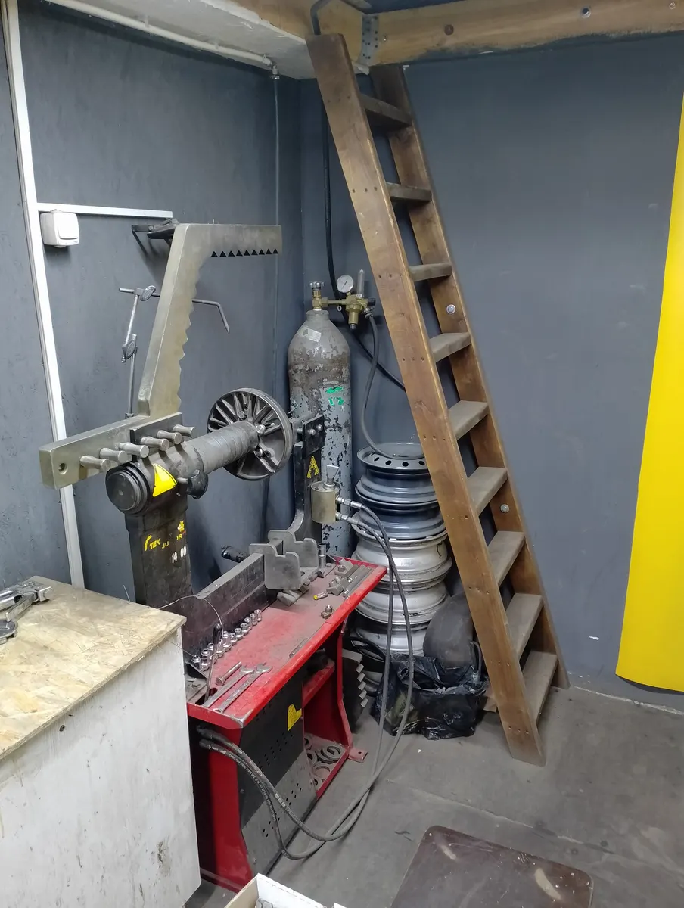
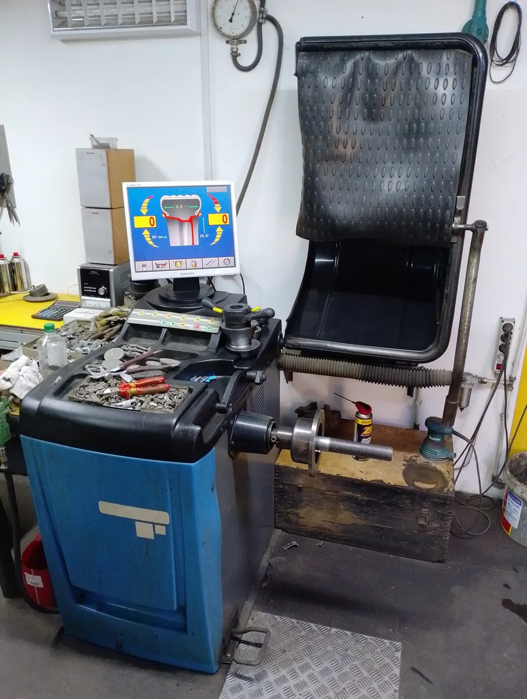
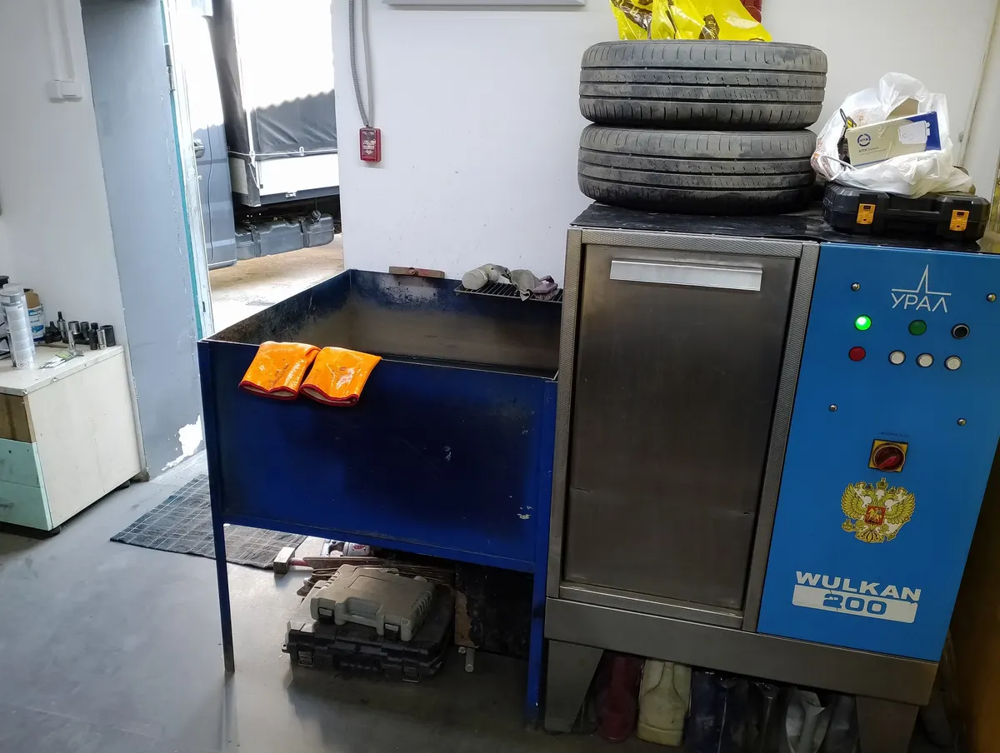

Шиномонтаж · Нижние Поля, Москва
Шиномонтаж на Нижних Полях: секретки, порезы, диски
Ежедневно с 10:00 до 20:00. Мы во дворе на территории парковки: ищите зелёный павильон с вывеской «Шиномонтаж».
- 4,9 на Яндекс.Картах, 117 отзывов
- Ежедневно 10:00–20:00
- Снимаем секретки, варим и правим диски

Услуги и цены
Цены, которые владелец указал на Яндекс.Картах и у входа. По остальному назовём сумму по телефону до приезда.
Шиномонтаж
- Шиномонтаж, 4 колесацена с карточки на Яндекс.Картах3 000 ₽
- Переобуть все колёсазависит от размера колёс1000–3000 ₽
- Подкачка одного колеса50 ₽
- Балансировкауточнить
- Ремонт проколауточнить
Сложные работы
- Снятие секретных гаекуточнить
- Ремонт бокового пореза шиныуточнить
- Аргонная сварка и правка дисковуточнить
- Покраска и реставрация дисковуточнить
Точную стоимость назовём по телефону или в WhatsApp, когда узнаем размер колёс и что нужно сделать.
Как проходит
- 01
Позвонили или написали
Подскажем по услуге и цене, как найти нас во дворе.
- 02
Заехали во двор на Нижних Полях, 29
Зелёный павильон с вывеской «Шиномонтаж» и жёлтой дверью.
- 03
Мастера сделали работу
Переобули, отбалансировали, при необходимости починили колесо или диск.
- 04
Оплатили удобным способом
Картой, наличными или переводом.



Что говорят клиенты
Берутся за сложное
В отзывах: секретки сняли за пять минут без повреждений диска, заварили трещину на литье.
Быстро
Клиенты пишут про переобувку за 15 и за 20 минут.
Подсказывают по делу
Говорят, когда шины пора менять, а когда не нужно.
Давно на месте
В отзывах клиенты ездят к этим мастерам больше десяти лет.
Отзывы с Яндекс.Карт
«Отличное место, всем советую! Открутили 4 секретки менее чем за 5 минут, без каких-либо повреждений, всё сделано аккуратно и вежливо!)»
Евгений М · 27 сентября 2022
«Устранял здесь огрехи другого шиномонтажа, попросту в другом месте сорвали ключь для секреток. Задача была снять 3 старых секретки, Владимир справился на отлично. Цены на работу адекватные, также здесь можно отремонтировать диски плюс покрасить. Вобщем всём советую!»
АвтоПодборГарант · 21 июня 2024
«Спускало переднее колесо, медленно как-то, 0.5 бара за неделю. Приехал, быстро нашли прокол, залатали. На всё чуть меньше 20 минут. Рекомендую.»
Виктор · 21 сентября 2025
Отзывы с карточки на Яндекс.Картах, без правок.
Частые вопросы
Где вас найти?
Москва, улица Нижние Поля, 29, строение 17. Мы во дворе на территории парковки, за забором. Ищите зелёный павильон с красной вывеской «Шиномонтаж» и жёлтой дверью. Рядом работает другой сервис, не перепутайте.
Во сколько вы работаете?
По карточке на Яндекс.Картах: ежедневно с 10:00 до 20:00. Перед выездом лучше позвонить.
Снимаете секретные гайки?
Да, в отзывах клиенты пишут, что секретки снимают быстро и без царапин на диске. Цену назовём по телефону.
Чинить диски вы беретесь?
На карточке указаны аргонная сварка, правка, прокатка, реставрация и покраска дисков. Цену и сроки назовём по телефону.
Чем можно оплатить?
Картой, наличными или банковским переводом.
Есть гарантия?
Да, на карточке указана гарантия. Условия уточните по телефону.
Позвоните, мы во дворе на Нижних Полях
- Адрес
- Нижние Поля, 29, стр. 17, Москва
- Часы
- Ежедневно 10:00–20:00
- Телефон
- +7 (915) 114-72-99